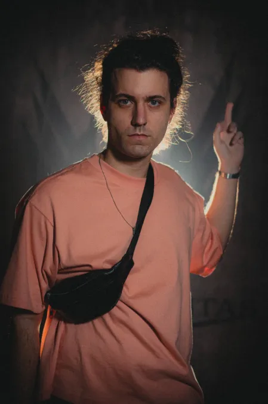
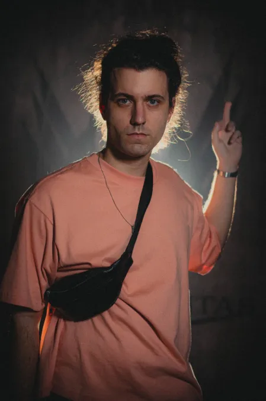

Ordem Paranormal: Calamidade é a quarta temporada da série Ordem Paranormal, continuação de Ordem Paranormal: Desconjuração.[1] É uma campanha de RPG de mesa baseada no sistema de Ordem Paranormal RPG, criado pelo mestre junto da equipe de Skyfall RPG (Pedro Coimbra e Silvia Sala) e da equipe de Tormenta 20 (Felipe Della Corte e Guilherme Dei Svaldi).[2] Mestrada pelo streamer, diretor criativo e roteirista de Enigma do Medo, Cellbit, é protagonizada por dois lados: do lado da Ordem, sendo Antônio Pontevedra, Arthur Cervero, Carina Leone, Dante, Rubens Naluti e posteriormente Joui Jouki; do lado de Kian, sendo Artemis Deordelin Rodrigues, Boris Lukic, Damir Lukic, Gal e Theodore Bagwell.
Dez meses se passaram após o retorno de Kian. Nenhum sinal de qualquer interferência no equilíbrio. Mas uma nova pista faz a Ordo Realitas começar a agir novamente. Um antigo caso de Arnaldo Fritz, relatando sobre uma entidade descrita como "O Diabo", reúne uma nova equipe de agentes, composta pelo pequeno e inteligente Rubens Naluti, o agente ex-aposentado Antônio Pontevedra, a promissora Carina Leone, filha do líder de uma máfia italiana de agentes paranormais, e os veteranos Arthur Cervero e Dante. Juntos, eles devem pesquisar mais a fundo sobre o caso enquanto continuam a busca pelo poder das Relíquias da Calamidade.


 
